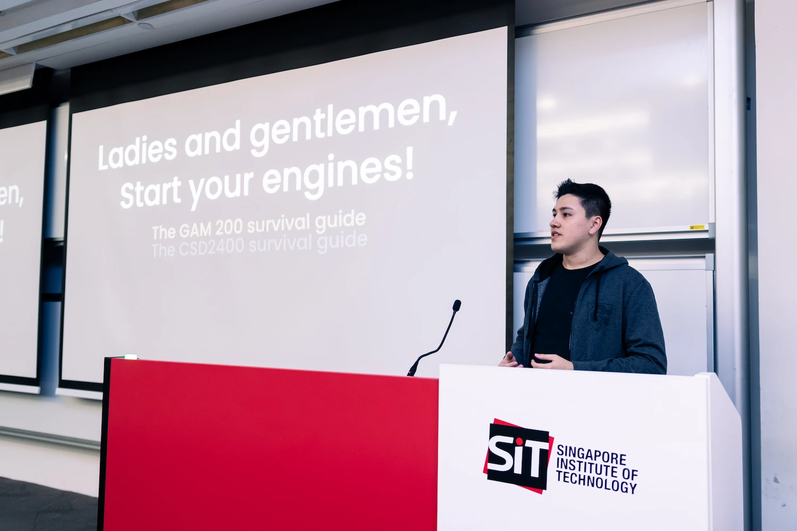
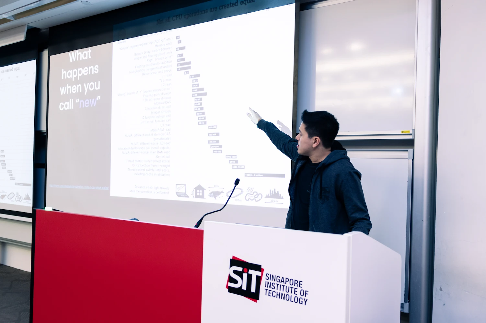
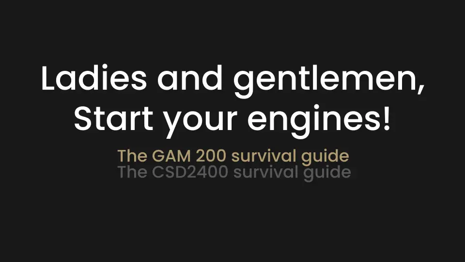
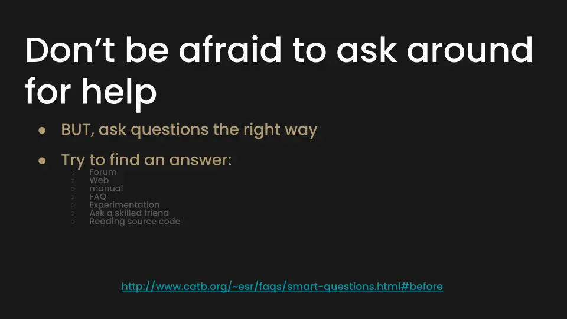
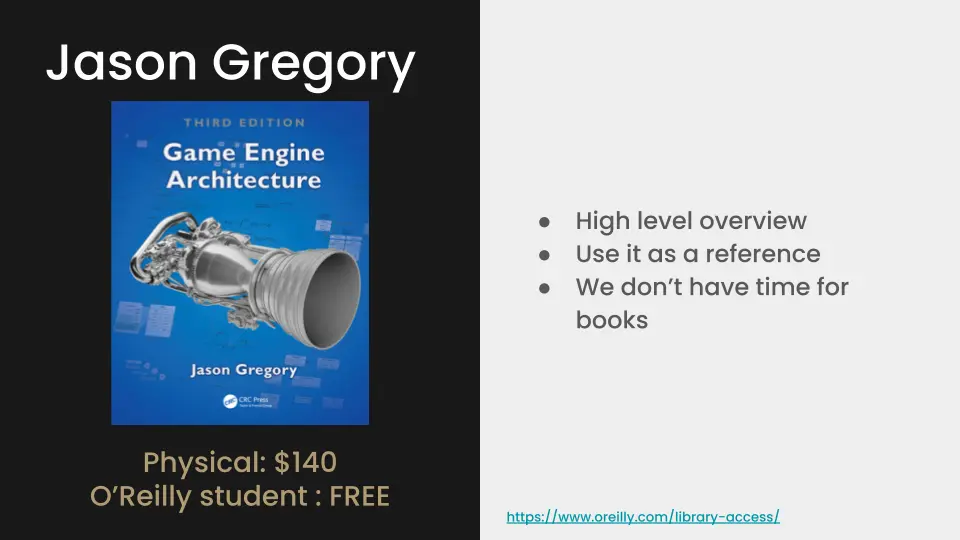
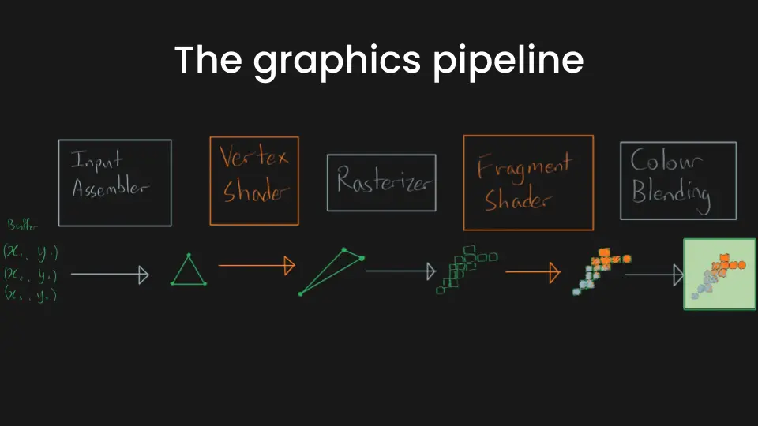
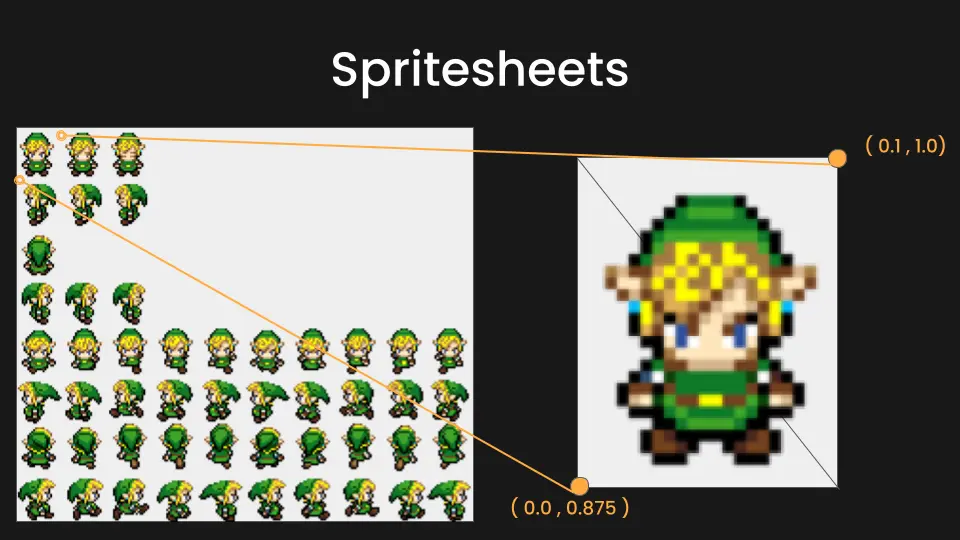

Engine Architecture Club
Lectures Dedicated to our Sophomores








The goal of the club was to provide a platform for students to continuously learn and grow in their game development journey, and my contributions to its success as a teacher and organizer were essential in achieving the goal of the club in its inaugural year.
As the founder of the Digipen SG Engine Architecture Club, I was responsible for establishing a school-backed initiative where Junior students could share their experiences and knowledge of engine development with Sophomores. Through my efforts in designing, scheduling, and managing hour-long lectures, I aimed to foster interest and a deeper understanding of engine development, helping students build intuition and accelerate their progress.
Feedback from students on the efficacy of the club has been positive. The technical professor has also noted a tangible improvement in the sophomores' engines. I am proud of the accomplishments of the Engine Architecture Club team.
Contributions :